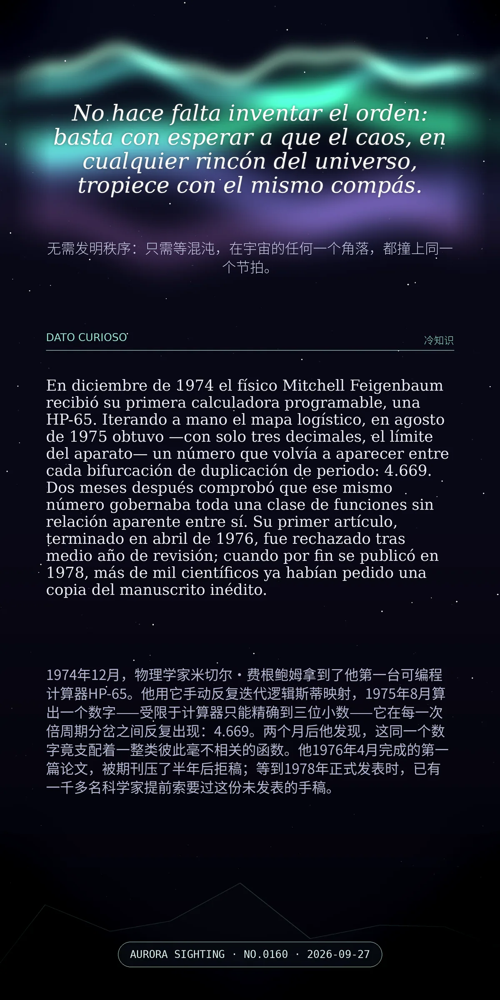

No hace falta inventar el orden: basta con esperar a que el caos, en cualquier rincón del universo, tropiece con el mismo compás.（无需发明秩序：只需等混沌，在宇宙的任何一个角落，都撞上同一个节拍。）
En diciembre de 1974 el físico Mitchell Feigenbaum recibió su primera calculadora programable, una HP-65. Iterando a mano el mapa logístico, en agosto de 1975 obtuvo —con solo tres decimales, el límite del aparato— un número que volvía a aparecer entre cada bifurcación de duplicación de periodo: 4.669. Dos meses después comprobó que ese mismo número gobernaba toda una clase de funciones sin relación aparente entre sí. Su primer artículo, terminado en abril de 1976, fue rechazado tras medio año de revisión; cuando por fin se publicó en 1978, más de mil científicos ya habían pedido una copia del manuscrito inédito.（1974年12月，物理学家米切尔·费根鲍姆拿到了他第一台可编程计算器HP-65。他用它手动反复迭代逻辑斯蒂映射，1975年8月算出一个数字——受限于计算器只能精确到三位小数——它在每一次倍周期分岔之间反复出现：4.669。两个月后他发现，这同一个数字竟支配着一整类彼此毫不相关的函数。他1976年4月完成的第一篇论文，被期刊压了半年后拒稿；等到1978年正式发表时，已有一千多名科学家提前索要过这份未发表的手稿。）
冷知识由执笔的模型自行查证。逐条断言、来源与所引原句存档在纯文字副本里，未经程序逐字校验，留作事后核实。